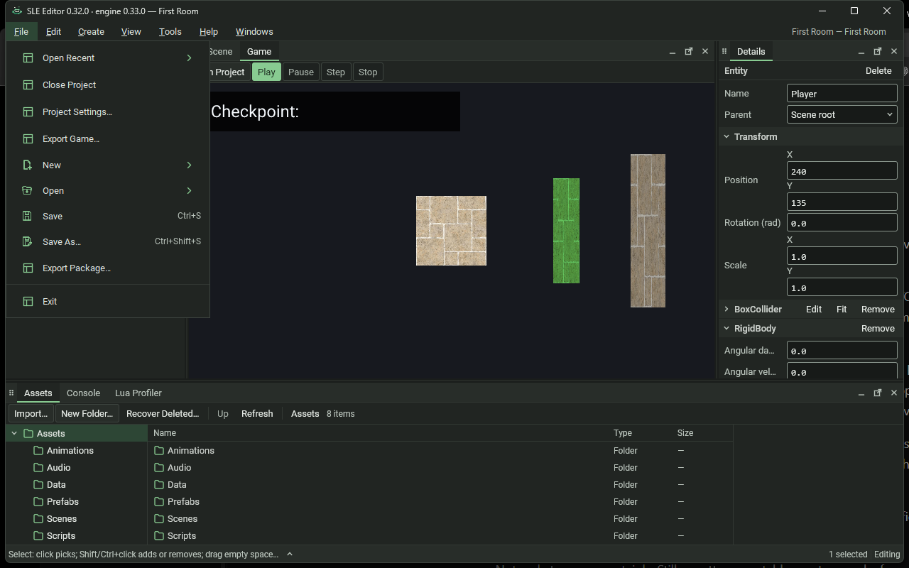

Run and export First Room
Finish the wall, trigger, and HUD, then save First Room and confirm FirstRoom.scene.json is the startup scene in File → Project Settings….
Run inside the editor
Edit → Play runs the open scene. Click Game to give it keyboard focus, then hold D until Player reaches the wall and the HUD says Inside. Hold A until it says Outside. Stop, then choose Edit → Run Project to repeat the check against the saved startup scene.
Launch the folder project
From the checkout in Windows PowerShell, replace C:/Games/First Room with your project folder. The Debug executable comes from the quickstart build.
& "./build/debug/engine_app/Debug/engine_app.exe" --project "C:/Games/First Room/First Room.sleproject"The separate First Room window should show the same camera view, movement, wall, and HUD. Press Esc to exit. Add --frames 120 for a bounded startup check.
The descriptor selects the startup scene and game window. Keep the asset root, files, and their .slemeta sidecars with the descriptor so project references can resolve from any working directory. See project files and runtime resources.
Export a runnable game

- Choose File → Export Game…. If you have drafts, choose Save and Export or Export Saved Versions. Save untitled documents to the project first.
- Choose Windows x64, Linux x64, or Both. If prompted, select a prepared Release bundle for each requested target. See the runtime bundle build instructions.
- Open
Exports/First Room. Repeat exports use a suffix such asFirst Room-2. The export contains a runnablewindows-x64/orlinux-x64/folder for each selected target, alongside its ZIP or TAR.GZ archive. - Copy the runnable folder or extract its archive on the target OS. Open
First Room.exeon Windows or run"./First Room"on Linux. The game reads the adjacent config and packages. Check the movement, wall, and HUD.
With both runtimes bundled, the packaged editor can export Both offline. Transfer each archive to its target OS before extracting it. On Linux, run tar -xzf linux-x64.tar.gz to preserve the launcher’s executable mode.
From an unrelated working directory, run the executable by its absolute path.
& "C:/Deliveries/windows-x64/First Room.exe" --frames 120See the package layout and compatibility details.
Export, apply, and roll back an update
- Keep a clean copy of the
windows-x64/delivery with both manifests. Linux x64 supports full exports only. Edit and save project content, then choose File → Export Content Update… and select the delivery as the baseline. Use the same project and exact Windows x64 runtime. If the runtime changes, export a full game. - Choose File → Apply Content Update… and select the baseline and update folder. The editor verifies both and publishes a runnable sibling folder. Launch the executable in that folder to check the update.
- To roll back, launch the original delivery. Apply preserves its files.
Updates carry whole packages whose contents changed, along with the target config and manifests. See baseline selection and update behavior.